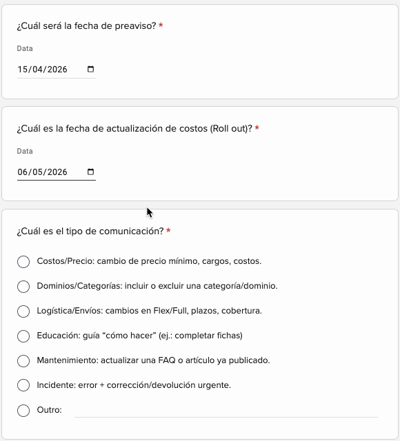
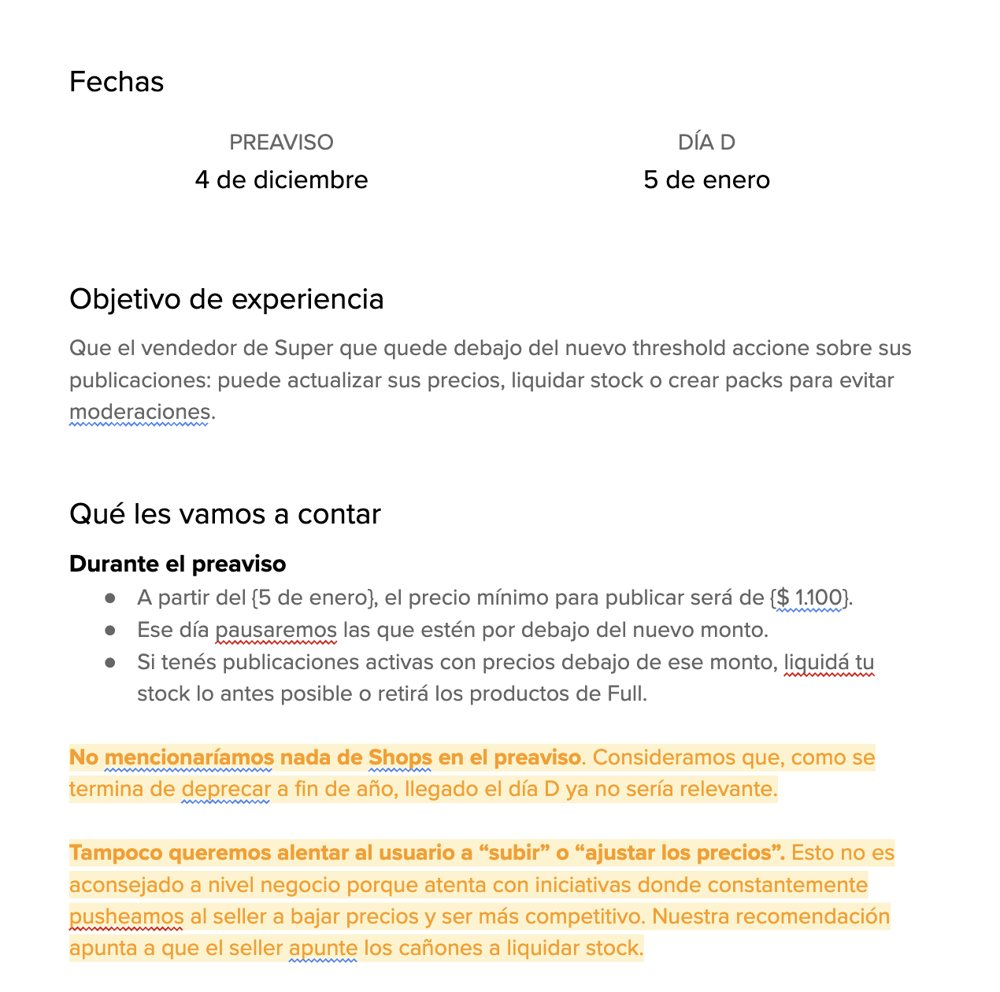
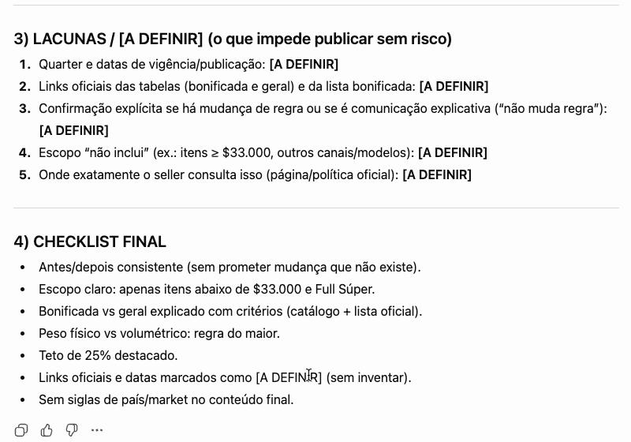
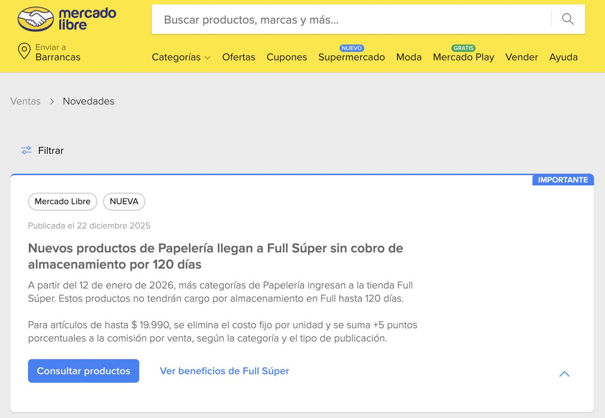
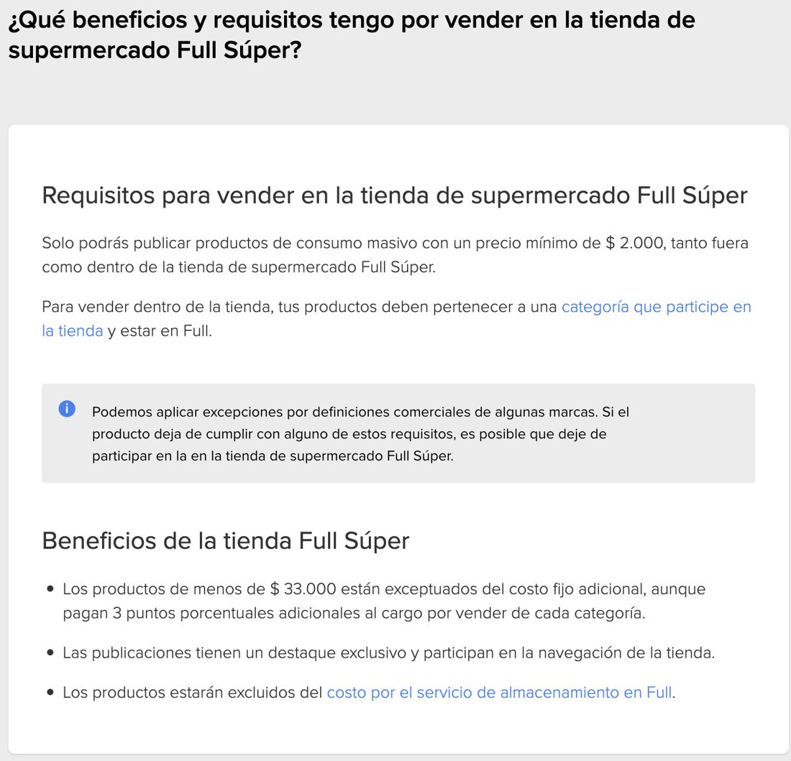
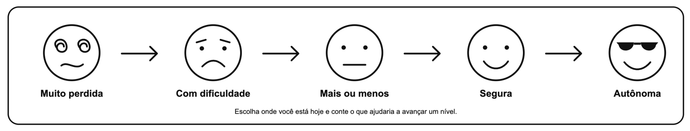
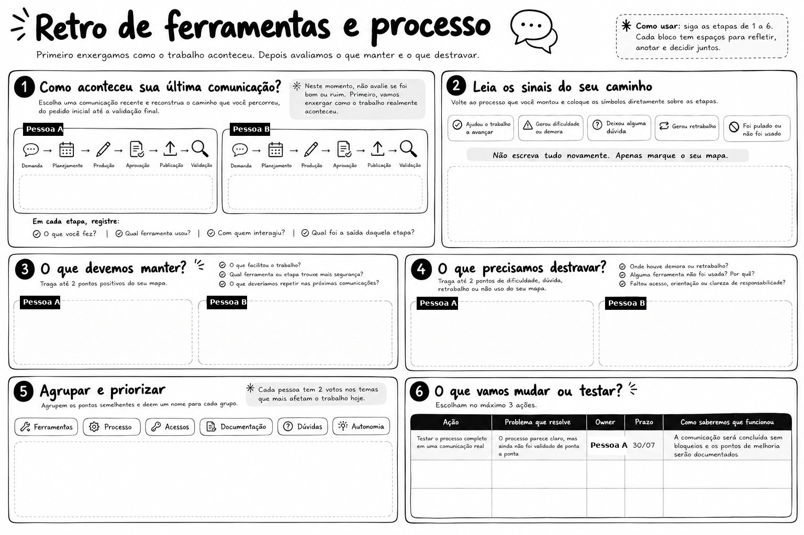

Every designer started from zero
Any UX designer needed time to learn how to produce a communication end to end. The know-how sat with a few people, so every new request depended on them.
Learning experience design and AI enablement · Mercado Libre · 2026
An enablement program for working professionals. UX designers had to learn to produce seller communications end to end, and the know-how lived with a few experts. I defined the audience and the learning objectives, built the instruction around hands-on workshops, job aids and three AI assistants, assessed performance against explicit criteria, and evaluated the results at four levels. Then I turned the same material into a retrieval-ready knowledge base for engineers, product managers and commercial teams, and built microlearning with scenario-based assessment for sales engineers on top of it.
Anonymized version. Colleague names, internal tool names and links are removed, and figures are approximate.
Learning design at a glance
The program was designed backward from the job: what a designer must be able to do, how we would know they can do it, and what should change in the work as a result.
| Target audience | UX designers at Mercado Libre who write communications for sellers, working with Product and Commercial stakeholders. Experienced professionals, new to this specific workflow. |
|---|---|
| Performance problem | Long learning curve, dependency on a few experts, several rounds of back and forth per request, and errors in dates, links and rules reaching sellers. |
| Learning objectives | Five observable objectives, one per skill in the workflow, from turning a request into a brief to checking a live communication. |
| Instructional strategy | Hands-on workshops, job aids (decision rules, templates, checklists) and three AI assistants as performance support at the moment of need. |
| Assessment | A performance task: produce a real communication alone. Each objective is checked against the definition of done of its stage. |
| Outcome evaluation | Four levels: reaction, learning, behavior on the job and business results, captured through a structured retrospective and operational data. |
| Effectiveness metrics | Task pass rate, share of communications through the process, delivery time, errors after publishing and first-review approval. |
Context
The end audience of the communications was sellers. The audience of the program was the designers who write for them.
Any UX designer needed time to learn how to produce a communication end to end. The know-how sat with a few people, so every new request depended on them.
Each request took several rounds to collect missing information. With no checking step, dates, links and rules could go wrong and reach sellers that way.
Learning objectives
After onboarding, a UX designer can do five things. The definition of done of each stage works as the assessment criterion, so “learned” means the same as “done right on the job”.
| The designer can | Assessed by |
|---|---|
| 1. Turn a stakeholder request into a complete brief, using the intake form and the brief assistant | Dates agreed and in the calendar, brief complete, roadmap shared with stakeholders |
| 2. Choose the right format with the decision rules | The format matches the rule for that type of change, and passes review |
| 3. Tell a pre-notice from a rollout communication and write each correctly | Each phase answers its required questions, and passes review |
| 4. Produce the content with the content assistant and document it for review | Reviewed in the team channel and approved |
| 5. Validate, publish and check the live communication | Links, dates, numbers and language adaptation consistent, content scheduled correctly |
The program
The content of the training is the process itself. Four stages take a request from intake to a checked, live communication, and every stage ends with a definition of done.
| Stage | Goal | Tools | Definition of done |
|---|---|---|---|
| 1. Brief and plan | Turn a request into a brief ready for execution | Intake form, brief assistant, shared calendar, onboarding assistant | Dates agreed and in the calendar, brief complete, roadmap shared with stakeholders |
| 2. Create | Write quality content in the right format | Content assistant, docs or design tool | Reviewed in the team channel and approved |
| 3. Validate and iterate | Consolidate feedback and close the final version with a change history | Centralized review in the team channel, documentation, content assistant | The approved version is fully reflected in the final document, with no context gaps |
| 4. Publish and check | Go live in the right channel and confirm it is correct after publishing | Publishing platforms, onboarding assistant with checklist | Links, dates, numbers and language adaptation consistent, content scheduled correctly |


Choosing a format stopped being a matter of opinion. One rule per situation, and a required structure per format.
| When the change is | Use | It must answer |
|---|---|---|
| Dated and needs fast notice | Email or news post | What changed and when, who is affected, what to do |
| A question that will keep coming back | FAQ | A direct question, an objective answer, rules and exceptions, references |
| Something that needs step by step teaching | Article | A structured how-to with examples and references |
| A big change | Email or news post, plus FAQ or article | Fast notice now, and an explanation people can come back to |
I built them as custom GPTs grounded in a curated knowledge base of rules, formats, examples and the process. They answer from those documents, so they reinforce the documented rule instead of improvising. It is a retrieval-augmented setup using custom GPT knowledge files, not a custom pipeline.
Guides new designers through the process and runs the checklist before and after publishing.
Turns a stakeholder request into a complete brief and flags the information still missing.
Produces the content in the chosen format, following its required structure and the market’s language.

Adoption: most of the team used the assistants, in over 70% of communications.
Worked example
A change moved a group of product categories into a new store area of the marketplace, written in Spanish for a Spanish-speaking market. The material had shipping costs, price ranges, requirements, exceptions and two dates.
What we will do and what it means for the seller. Today versus after the change: location, shipping cost, visibility and the action the seller must take. The target sellers, the pre-notice and rollout dates, the experience objective, and what to say in each phase.
A pre-notice news post, a pre-notice FAQ, an evergreen rollout FAQ and an update to the category list. Approved in 2 review rounds.
Scoped the shipping saving to the price range where it applies, and said so in every piece.
Stated clearly what did not change: the sales commission.
Framed the message around being more competitive, not around raising prices.
Listed the requirements to sell in the new area, so sellers could check their own listings.


Training and outcome evaluation
I ran a hands-on workshop with four teammates, then a second one with two more. Afterwards, each person had to produce a communication on their own. Five of the six did.
| Level | Question | Instrument | Result |
|---|---|---|---|
| 1. Reaction | How do people feel about the tools and the process? What got faster, clearer or safer? | Retrospective check-in on a five-point autonomy scale, plus usefulness questions | Captured for each participant, first round with 4 people |
| 2. Learning | Can they produce a communication end to end? | Performance task checked against each stage’s definition of done | 5 of 6 passed |
| 3. Behavior | Do they use the process and the assistants on the job? | Share of communications that go through the process | Over 70% |
| 4. Results | Did delivery get faster and safer? | Delivery time, errors after publishing, first-review approval | 10 → 7 days, 5 → 1 errors a month, 40% → 70%+ |


| Question | Measures |
|---|---|
| Which tool or stage did you actually use, and when did it help? | Adoption |
| What got faster, clearer or safer? | Perceived usefulness |
| Which tools are not being used, and why? | Blockers |
| Which stages raise the most questions, and are they problems of guidance or of process? | Blockers, by root cause |
| What can people already do on their own? | Autonomy |
| Which part should stay as it is? | What to protect |
Closing the loop: the first round defined 1 action, with an owner, a deadline and a success criterion. It was completed.
Business results
Figures are approximate, since exact data is confidential.
| Measure | Before | After |
|---|---|---|
| Delivery time per communication | 10 days | 7 days |
| Rounds of back and forth per request | Several | 2 |
| Errors found after publishing (links, dates, numbers) | 5 per month | 1 per month |
| Approved on first review | 40% | Over 70% |
| Communications through the process | n/a | Over 70% |
RAG knowledge base for engineers and other non-content roles
Engineers, product managers and commercial teams don’t need to write a communication. They need precise answers when they ship a change that affects sellers: how to request it, what to send, which format fits and when it goes live. I restructured the source into a knowledge base for a retrieval-augmented assistant that answers them.
| Audience | Engineers, sales engineers, product managers, commercial and operations teams |
|---|---|
| Job to support | Request the right seller communication, with the right inputs, at the right time, without a content expert in the loop |
| Source material | A 19-slide deck with screen recordings and three whiteboards: templates, a full worked case and the retrospective, in Portuguese and Spanish |
| Output | 41 single-topic chunks, 140 to 460 words each, with a 19-field metadata schema and a controlled vocabulary, including the microlearning unit and its assessment |
| Evaluation | Schema validation, word-for-word checks against published texts, and a 24-question retrieval test in the voice of the target roles |
Extraction. I pulled everything out of the source, including tables, links embedded in text, screenshots of briefs, and the screen recordings of the intake form fields and the assistants’ demos.
Chunking. One topic per chunk, so each one answers a question on its own. Every chunk opens with a breadcrumb and closes with its source. They cover how to request a communication, reference timings, formats and channels, pre-notice and rollout, the four stages, tools, templates, worked cases, the retrospective, microlearning and assessment for sales engineers, a glossary, contacts and limits.
Tagging for retrieval. Besides document type, topic, format, stage, phase, market, audience and status, two fields exist only for retrieval: the questions the chunk answers, written the way a non-expert would ask them, and synonyms in Portuguese and Spanish. Both go into the embedded text, and the synonyms let keyword search match acronyms and local terms.
# chunk front matter (excerpt, translated) id: comus-011 title: Which communication format to use doc_type: guide topics: [formats, email, news, faq, article] process_step: [1] markets: [all] audience: [all] status: current derived: false questions: - Which format should I use to announce a change? - When do I use email, news, FAQ or article? - The change is big, do I need more than one format? synonyms: [choose format, decision tree, árbol de decisión, novedad, nota, e-mail] sources: slides 5 and 6 related: [comus-012, comus-013, comus-014, comus-020] data_as_of: Q1/26
Timing also matters: before the change (pre-notice) or when it goes live (rollout). See comus-020.
Source: deck, slides 5 and 6
The source deck was written for designers. This chunk rewrites the same process from the requester’s side, for engineering, product and commercial teams. It starts with a rule of thumb, gives the steps in the order they happen, and ends with what speeds a request up and how long it takes.
# comus-002 (excerpt, translated, anonymized) title: How to request a communication (guide for non-content roles) doc_type: guide topics: [how-to-request, process, form, roles] process_step: [1, 2, 3, 4] audience: [engineering, product, commercial] status: current derived: true # synthesized from 4 slides questions: - I need to tell sellers about a change, what do I do? - I'm launching a feature that changes a seller rule, who do I tell? - I'm changing a shipping, price or category rule, how do I warn sellers? - ¿Cómo aviso a los vendedores de un cambio? synonyms: [warn sellers, request, intake, form, solicitud, abrir demanda] sources: slides 9, 10, 12, 14 + form recording related: [comus-036, comus-041, comus-030, comus-006]
Rule of thumb: if a change affects what the seller pays, sells, sees or has to do, it probably needs a communication. Requests always start with the form.
What speeds it up: dates already defined, the rule explained as “today it works like this, it will work like that”, and clear exceptions.
How long it takes: no formal SLA, but about 7 days and 2 rounds on average. Ask well ahead of the pre-notice date.
Source: deck, slides 9 to 14, and the form recording
The risk with a knowledge base is an assistant that sounds sure about the wrong thing. These rules prevent it.
The test questions are written the way the target roles actually ask, like “I’m changing a shipping rule in the app, how do I tell sellers?” or “what do I need to send before requesting a communication?”
| Check | Result |
|---|---|
| Schema validation: required fields, vocabulary, cross-references, chunk size | 41 of 41 chunks pass |
| Published seller texts in the worked case, checked word for word against the source | 3 of 3 match |
| Retrieval test: 24 questions in the voice of engineers, product managers and commercial teams | Right chunk in the top 3 for 24 of 24, with a simple keyword baseline (TF-IDF) before embeddings |
Questions as people typed them, in Portuguese or Spanish, translated here. Each one lists the chunks that came back in the top 3. The expected chunk is in bold.
| Question | Top 3 retrieved | Hit |
|---|---|---|
| “I’m changing a shipping rule in the app, how do I tell sellers?” | 002 · 012 · 015 | ✓ |
| “What do I need to send the squad before requesting a communication?” | 001 · 002 · 006 | ✓ |
| “Difference between pre-notice and rollout” | 020 · 014 · 061 | ✓ |
| “What’s the squad’s SLA?” | 095 · 099 · 002 | ✓ |
| “What’s the minimum supermarket price in Chile?” | 093 · 062 · 060 | ✓ |
| “¿Cómo pido una comunicación para vendedores?” | 002 · 015 · 051 | ✓ |
| “How many days ahead do I request an FAQ?” | 006 · 099 · 020 | ✓ |
| “Who do I talk to if I get lost?” | 095 · 002 · 001 | ✓ |
| “Is there a quick training for sales engineers on how to request a communication?” | 080 · 081 · 005 | ✓ |
Total: hit@3 of 24 out of 24. The SLA and price questions are traps: the right answers are the chunk that says “not defined” and a chunk tagged as a dated example, not a current rule.
A build script validates the schema and regenerates the ingestion file after every edit, and the 24 test questions ship with the knowledge base so the retrieval check can be re-run on any setup. A maintenance log lists 6 inconsistencies found in the source, such as conflicting dates and different market coverage between the intake form and the templates, to resolve before launch.
Status: built and tested offline, not deployed yet.
Microlearning and assessment for sales engineers
Sales engineers bring seller-facing changes to the squad, so they need to request a communication correctly the first time. I built microlearning units and an assessment for them from the same knowledge base. Volume, dates and results are confidential, so the sample below shows the design.
| Audience and job | Sales engineers who take changes affecting sellers in their portfolio to the squad. The job: request a communication that needs no back and forth. |
|---|---|
| Objective | One observable objective per unit. Sample: fill in a complete communication request for a real scenario, with markets, pre-notice and rollout dates, the rule before and after, exceptions and official sources. |
| Source material | Each unit is built from knowledge base chunks, so when a rule changes in the base, the unit changes with it. The sample uses the chunks on pre-notice and rollout (020), inputs checklist (036), timings (006) and formats (011). |
| Format | About six minutes: an opening scenario, three short blocks, a practice step and an answer key. |
| Assessment | Three scenario questions and a short task scored against a rubric, with the pass criterion set before launch. |
Objective
Fill in a complete communication request for a real scenario: markets, pre-notice and rollout dates, the rule before and after, exceptions and official sources.
| Time | Block |
|---|---|
| 0:00 | Scenario. A shipping cost change for one category goes live in three weeks, and a large seller in your portfolio is already asking about it. |
| 1:00 | Pre-notice versus rollout. Why every request needs both dates. |
| 2:00 | The six items of a complete request. Scope, dates, the rule before and after, what the seller must do and by when, exceptions and official sources. |
| 4:00 | The common mistake. “Shipping is changing, can you do a communication?” with no dates, rule or source. |
| 4:30 | Practice. Fill in the request for the scenario, then compare it with the answer key. Every missing item is a question the squad would have had to ask. |
| Scenario question | Correct answer | Why |
|---|---|---|
| The new fee applies from a set date, and sellers must adjust prices before it. Which communication goes out first? | Pre-notice, as a news post or email | A dated change that needs action beforehand starts with a pre-notice. |
| After launch, sellers ask every week how the fee is calculated. Which format solves it? | FAQ | A question that keeps coming back becomes an FAQ. |
| Part of your portfolio has a special commercial condition and is not affected. What goes into the request? | The exception, and whether that group should be left out of the communication | Exceptions and exclusions are part of a complete request. |
Dates: gives both the pre-notice and the rollout date.
Rule: describes today versus after, with numbers or a clear condition.
Exceptions: says who is not affected, or states there are none.
Sources: names the official source, like a policy, table, PRD or ticket.
3 of 3 questions right and at least 3 of 4 rubric points. Anyone who does not pass redoes only the practice step.
The unit and its assessment are chunks 080 and 081. The entry chunk for requesters points to them, so someone asking the assistant how to request a communication is offered the six-minute unit.
Next step for a technical product. The same design fits a product audience, for example a sales engineer running a customer demo, with objectives such as “configure X” or “explain Y to a customer in two minutes”. There I would evaluate on four levels, reaction, learning, behavior on the job and business results, and track completion, assessment score, time to competence, support questions and output quality.